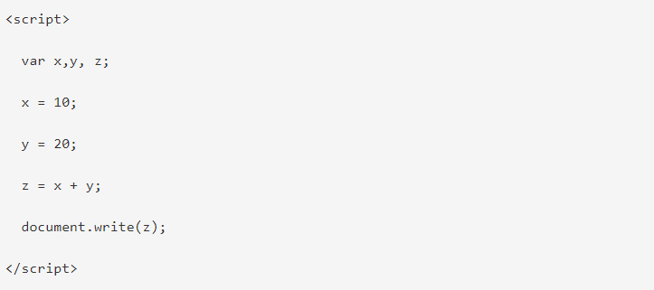
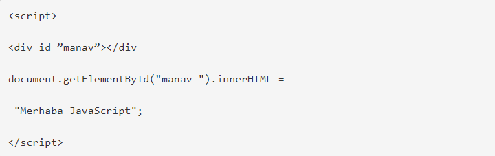

UZAKTAN EĞİTİM 1. HAFTA
Yukarıda verilen örnekte x, y, değişkenleri tanımlanarak bu değişkenlere sayısal değerler atanarak z değişkeninde bu iki değer toplanmış ve ekrana “document write()” komutu ile yazdırılmıştır.
Javascript İle Kodları birbirinden ne ile ayırırız?
Tüm programlama dillerinde olduğu gibi kod bloklarının birbirleri ile çakışmasını önlemek için belirli ayraçlar kullanılır. Javascriptte de kod parçacığını bir diğerinden ayırmak ve hataya mahal vermemek için noktalı virgül kullanılır (;).
Yukarıdaki örnekte olduğu gibi, var ile x, y, z değişkenleri tanımlanmış ve buraya kadar olan kısmın ayrı yorumlanması için noktalı virgül ile bitirilmiş. Devamındaki değişkenler de değer aldıktan sonra noktalı virgül ile bitirilmişler ve document.write komutu da aynı şekilde işlevini tamamlayabilmek için noktalı virgül ile kapatılmış.
Javascriptte boşluk kullanımı
meslek = "manav kamil"; meslek = "manav kamil";
yukarıdaki örneği incelediğinizde ilk meslek değişkeninden sonra boşluk eşittir işareti ve boşluk değişken tanımı var. Aşağıdaki örnekte o boşluklar yok. İki örnekte düzgün çalışacaktır.
Javascript Kod Uzunluğu
Javascript kodlarının uzun olması okumayı ve anlamayı zorlaştıracaktır bu yüzden, satırlara ayırarak yazmak her zaman daha kullanışlıdır.
